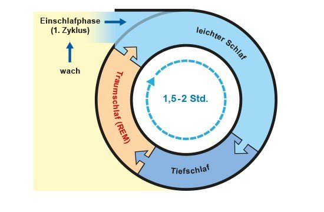

Der Schaf besteht aus einer Abfolge von Schafzyklen: Ein Zyklus wiederholt sich normalerweise alle 90 bis 110 Minuten. Wer also in einer Nacht zum Beispiel acht Stunden schläft, durchläuft etwa fünf solcher Schlafzyklen. Jeder Zyklus besteht wiederum aus unterschiedlichen Schlafphasen.
